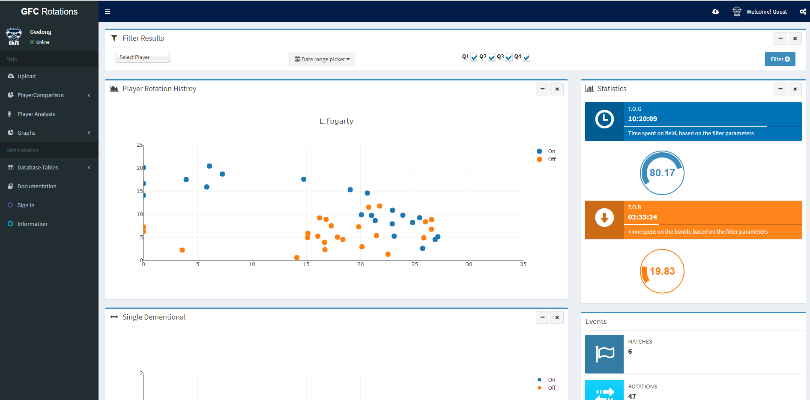

During the project, which spaned over 2018, we were required to develop an app based on the requirements of the Geelong Football Club and its staff. The task itself was initially very vague, but after the first official client meeting we were able to bring together a clear outline of tasks and client goals.
Project
Assertion
My role as developer was to work on filling these requirements, which ended up encompassing all aspects of the full stack application. From the user interface and client-side technologies, to the database, backend, and cloud platform. I used my experience to drive the meeting discussion and tried to help other developers whenever I could. You can find further information on my involvement in the contribution summary section.
In its entirety, I thoroughly enjoyed working on the project and the challenges it presented to the team. Ultimately the team banded together to produce a polished and professional product that we can all be proud of.
Project Site Project Repository
Contribution Summary

Admin LTE - UX/UI
The client identified the template they wanted to use and it was up to me to integrate that into our MVC application. The result was a very professional user interface and experience. It allowed all the developers to work independently and have a design framework to keep the project consistent.

JavaScript Implementation - date range picker
This added great functionality to help filter our visualization by a date range. With the help of the daterangepicker component, I could create my own function to send a date range back to the controller.
Azure - Application Deployment and Management
Majoring in cloud computing, it was my job to deploy the project to the Azure. Along with developing and manage the Azure SQL Server with others.

JavaScript Implementation - jquery knob
This fit into the project with relative ease as it was already included in the Admin LTE template. It helped created an extra data visualization for the player analysis.

Entity Framework - Database first approach
Using the Entity Framework design module, I created the entire scaffolding for the database connection.

Entity Framework - Database retrieval
Once the Entity Framework had been implemented we could all use it to create complex queries to the database. I laid the ground work for everyone to use my examples. I made sure I commented appropriately to help everyone else.

JavaScript - Ploty Scatter Graph
Once the Entity Framework had been implemented we could all use it to create complex queries to the database. I laid the ground work for everyone to use my examples. I made sure I commented appropriately to help everyone else.